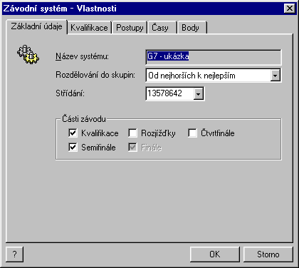
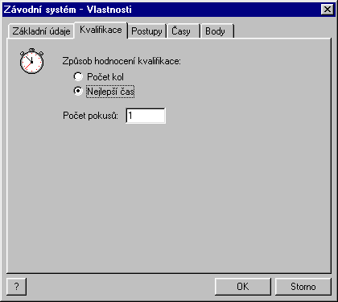
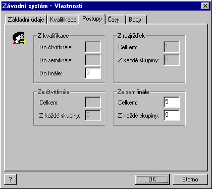
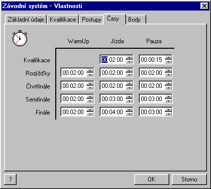
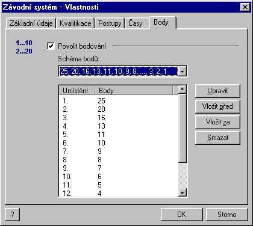

Back | Content
Race systems
The Race Manager software allows you to store and maintain the database of
race systems. The race system is a set of settings and options that determine the
race run. A new race system is created using File | New | Race system,
the F5 key, or the  icon.
icon.
The command opens the property sheet window Race system containing several
pages.

The Overall settings page contains the following items:
- Race name
- Group distribution – here you may specify how the racers should be
distributed among different groups during the transition to other race parts
- Lane exchange – here you may specify the order of the lanes as they
are exchanged among racers during the race rides. For example, the string
"13578642" means that the first racer starts at lane 1, then shifts
to lane 3, then 5 etc.
- Race parts – check the parts you want in the race.

The Qualifications page contains the selection of the racer qualification
evaluation method, whether it is the number of laps elapsed or the best lap time
achieved during the qualification.

The Advances page allows you to determine how many racers are entitled
to advance to the subsequent race part
- The section From qualification
allows you to specify how many racers are supposed to advance directly to
a specified race part (quarter final, semi final, final) without attending any
of the preceding race part.
- All other sections in the page allows you to determine how many racers
of those attending to a given race part are supposed to the subsequent race
part. You may specify, how many racers are taken from the top of the race part
result (Total item) and how many racers are taken from each group
(From each group).

In the Durations page, you may specify, how long should be each
phase of the race. The captions are self-explanatory.

In the Points page, you may specify the point bonuses for the racers
as later printed in the result sheet.